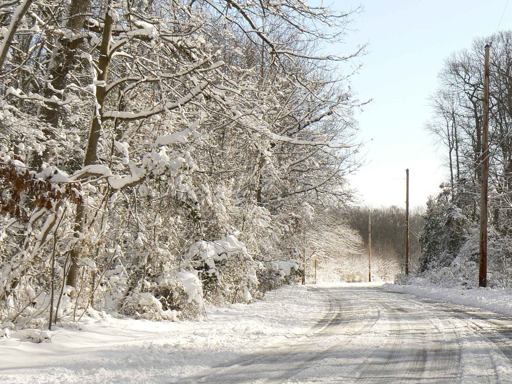

Sistema de predicció de vialitat hivernal a l'SMC
Roger Veciana i Rovira
Servei Meteorològic de Catalunya
Roadcasting
Roadcasting: usos
SMC i roadcasting
SIRWEC 2014 a Andorra
El model METRo
Model of the Environment and Temperature of Roads
Creat a Canadà per Environment Canada
Versió 3
En funcionament a disset països
Carreteres principals fins a carrils bici
METRo: Com funciona
Tres mòduls
Balanç d'energia
Conductivitat a la carretera
Presència de precipitació
METRo: Balanç d'energia
Ona curta incident
Albedo
Calor Latent
Calor sensible
Emissió infraroja
METRo: Conductivitat de la carretera
29 nivells
Més junts com més a prop de la superfície
Composició de la carretera
Els ponts els modela diferent
METRo: Precipitació
Afectació al balanç d'energia
Condensació
Congelació
Neu/tipus de neu
METRo: Dades d'entrada
Calen tantes estacions com punts es volen predir
En terrenys complexes calen molts punts
METRo: Assimilació de dades
El projecte Viamet
Predicció de tota la xarxa de l'àmbit d'el Berguedà
500 km de carreteres
Diputació i Generalitat
Producte format web
Centre de control
Llevaneus
El Berguedà
Gran varietat de carreteres
Orografia complexa
El Berguedà
Inviable posar moltes estacions
Solució:
"estacions virtuals"
Instal·lació de 4 estacions de carretera
Càlcul de les variables al altres punts amb diferents tècniques
Estacions virtuals: Temperatura i punt de rosada
Interpolació amb residus de dades d'estacions automàtiques
temperatura = a * altitud + b * f(distancia_mar)
anomalia = valor_calculat - valor_registrat
Estacions virtuals: Temperatura i punt de rosada
Resolució: 200m
Estacions virtuals: Vent
Model CALMET
Estacions virtuals: Precipitació
Dades corregides de radar
Estacions virtuals: Radiació
Dades WRF corregides
Estacions virtuals: Temperatura del ferm
Mapa tèrmic
Mapa tèrmic: Mesura
Mapa tèrmic: Mesura
Mapa tèrmic: Classificació
Mapa tèrmic: Classificació
Índex de Pasquill-Guifford (Champan et al, 2001)
Mapa tèrmic: Processament
Mapa tèrmic: Visualització
KML - Google Earth
Viamet: web
Moltes gràcies

←
→
/
Go to slide:
#